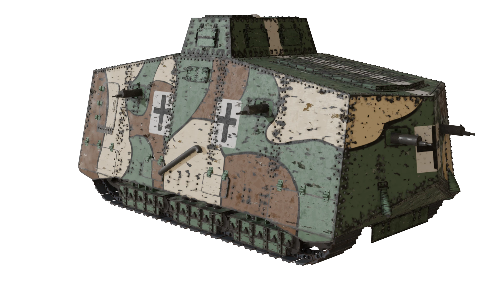
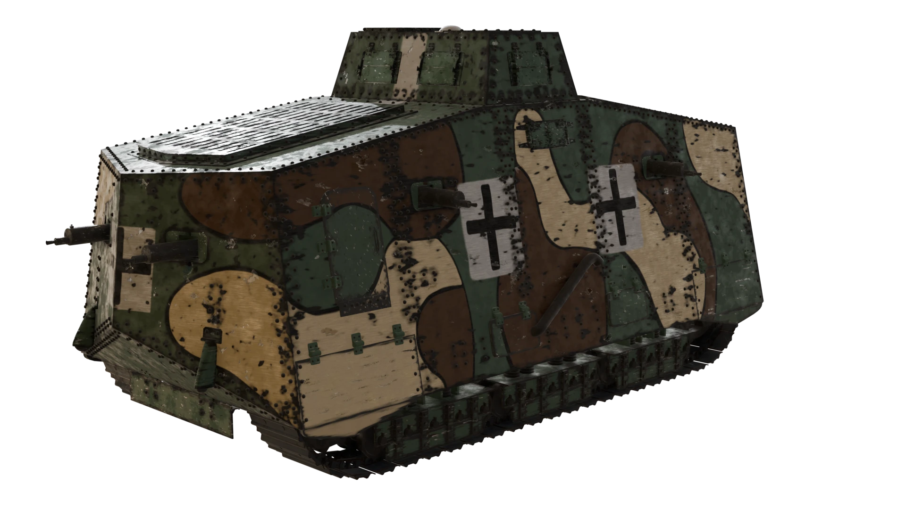
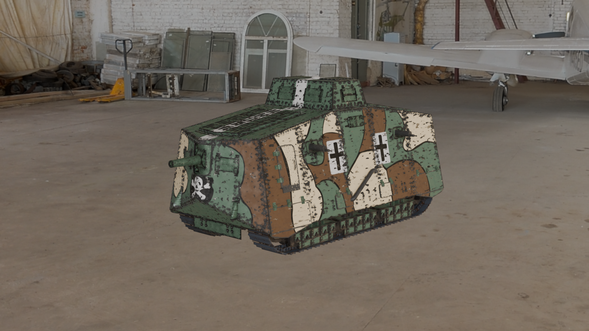
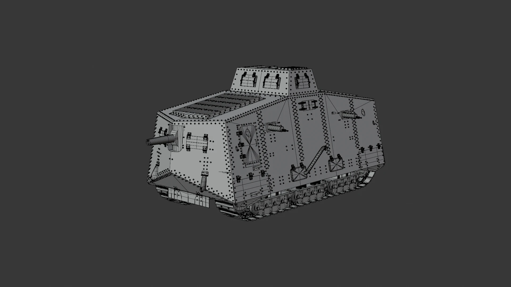

For what is essentially an up-armored tractor, the A7V evokes a no less striking sight. For me, part of the fun inherent in modeling is getting to research and learn all the minutiae about my subject matter. Did you know that the German Empire employed more captured British armor than all the A7V's ever produced?

The designers somehow developed a machine more cramped and overall unwieldy than their adversaires could; which when looking at Britain's efforts is truly an achievement. This beast's high height and proportionally low width certainly didn't help matters, what with its propensity to comically tip over when wading through uneven ground.

Though I clearly possess a bias for modeling highly detailed machinery, that does not preclude me from branching out into other subject matter. There's a certain challenge inherent in maintaining a cohesive geometric shape while also layering on details and camouflage.

